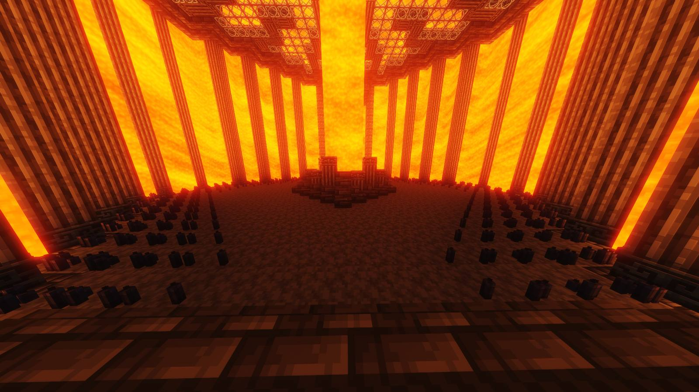

The Southern Branch is the lowermost branch of Peo Corp, being the absolute strongest in terms of firepower and ability. This branch deals with the South’s assaults on a daily basis, going as far as to directly enter the South for extended periods if the situation calls for such a response.
The Southern Branch mirrors the Hilltop Branch; while Hilltop has the characteristic hilltop station in each of its facilities, the Southern Branch has a well of lava akin to a valley. The Hilltop Branch typically contains the least dangerous hensa, while the Southern Branch is in charge of securing hensa capable of ruining the entirety of Peo Corp.
Besides the well and firepower, the main gimmick of the Southern Branch is its main room, also known as the “Vigil”. Around the well are numerous candles, each representing a Southern agent. A lit candle indicates that they are alive, while an unlit candle indicates that they have passed.

The Vigil exists due to the Southern Branch’s ability to transport the entire facility from one -verse to another through the execution of CODE-PRESERVE. CODE-PRESERVE requires the life force of every agent, however, so it is only used in incredibly dire circumstances where compromising the facility’s security means certain doom for Peo Corp as a whole. Thus, candles are used to track the progress of CODE-PRESERVE.
As of the END OF PEO CORP, a large number of facilities are still functional and have resumed typical procedures after CODE-PRESERVE was executed on a corp-wide basis; our hearts go out to those who bravely gave up their lives to protect our work.